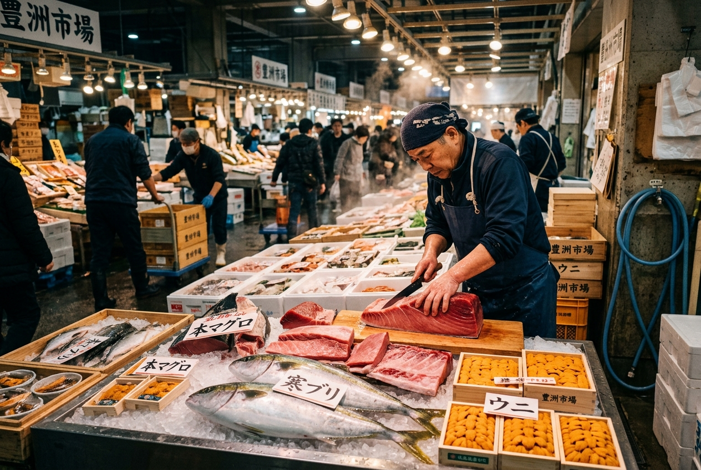

KIWAMI - 極み

Toyosu Tokyo Direct


"Hành trình ẩm thực chạm tới đỉnh cao Wabi-Sabi, nơi bếp trưởng Daiki Takahashi kết nối từng nhịp thở của đại dương Nhật Bản với nhiệt độ chuẩn xác của đôi bàn tay nghệ nhân."
Mỗi buổi sáng lúc 4:30 AM tại chợ cá Toyosu (Tokyo), các chuyên gia tuyển chọn hải sản (Nakagai) danh tiếng làm việc trực tiếp cùng bếp trưởng Daiki Takahashi để chọn ra những cá thể ngừ vây xanh hon-maguro loại 1, nhum biển nguyên con vùng Nemuro và cá cam Buri mùa béo ngậy.
Hải sản tươi sống được xử lý theo phương pháp Ikejime cổ truyền nhằm khóa trọn độ tinh khiết và vận chuyển máy bay hỏa tốc đến căn bếp Sabi trước 15:00 mỗi ngày.
